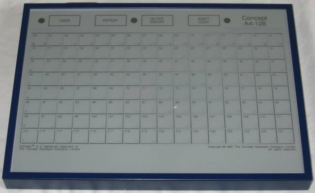
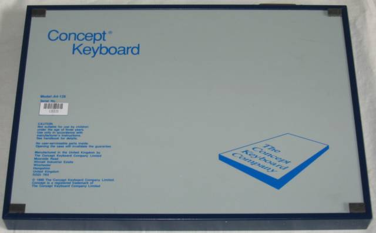

Concept Keyboard / Star Microterminals A4-128
A paper-overlay touch panel that let non-readers and motor-impaired children control a computer

Overview
The Concept Keyboard was a flat, A4-sized touch-sensitive membrane panel with 128 discrete touch zones (a larger A3 model offered 256 zones). It connected to the BBC Micro's User Port, and later to Apple II, IBM PC, RM Nimbus, Acorn Archimedes, and ZX Spectrum computers. Each zone sent a fixed 7-bit code when pressed; the paper overlay placed on top defined — for the user — what each zone would do for a given software program. Swapping the overlay reconfigured the entire interface, without changing any hardware or wiring.
Manufactured by Star Microterminals of Swansea, Wales (later renamed The Concept Keyboard Company and relocated to Winchester), the device found its primary audience in UK special-needs and early-years education. For children who could not read or type, the keyboard turned words into pictures; for children with motor disabilities, it replaced precise keystrokes with large-target touching. Teachers could author custom overlays and program zone behaviors in 10–15 minutes using simple BBC Micro *SET commands. The company remained active through the 1990s, introducing Universal and Universal Plus models with RS-232 serial ports for broader compatibility, before entering receivership in 1998.
Deep dive
The innovation was not electronic but conceptual. A printed paper overlay — typically A4-sized — was placed on top of the keyboard and held in place by corner clips. The overlay mapped pictures, words, or symbols onto the touch zones. When a child pressed the picture of a cow, the computer received zone code 47; the educational software knew that '47' meant 'cow' in the context of the farm-animals overlay. The same zone 47, under a different overlay, might mean 'FORWARD 20' in a Logo turtle programming activity. The overlay was passive — the computer could not detect which overlay was in use — but the reconfigurability was real: the same hardware became a completely different interface through a simple paper swap. This was a pre-touchscreen, pre-GUI approach to making computers physically accessible, and it prefigured tangible computing by over a decade.
For children who could not read, the Concept Keyboard collapsed the literacy barrier. Instead of typing words they could not recognise, children pressed pictures. For children with motor disabilities, the large touch zones (approximately 18 × 52 mm each) made computer access physically possible where a standard keyboard was not. The interaction philosophy was that the interface should adapt to the user, not the user to the interface — a principle that became central to accessibility HCI decades later.
The Concept Keyboard embodied several ideas that would later be formalised as 'tangible user interfaces' (Ishii and Ullmer, CHI 1997): physical objects (paper overlays) mapping to digital functions, reconfigurable physical interfaces, and non-screen-based interaction. Unlike later tangible interfaces, the overlay carried no digital identity (no RFID, no barcode, no conductivity pattern), but the human factors insight was the same: sometimes the best interface is one you can hold in your hands and swap like a placemat.
Team & pioneers
- Star Microterminals Ltd. Original manufacturer, based in Swansea, Wales. Founded the Concept Keyboard product line.
- The Concept Keyboard Company Ltd. Successor company, relocated to Winchester, Hampshire. Later acquired by Bowthorpe plc (1990), entered receivership 1998.
- A.B. Electronic Marketing Division (Cardiff). Acquired Star Microterminals when they were in financial difficulties, circa 1985.
Media

Sources
- Chris's Acorns — Concept Keyboard A4-128
- Centre for Computing History — Star Microterminals Concept A4-128
- Museum Wales — Star Microterminals Concept keyboard
- Acorn User, May 1985 — 'A New Breed of Keyboards'
- Lodge, J. (1991). The Concept Keyboard in Education. Early Child Development and Care, 69(1), 39–52
- Spectrum Computing — Concept Keyboard for ZX Spectrum